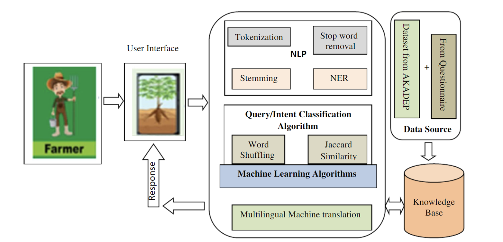

"I am a 3rd-year Computer Science Engineering student at BV Raju Institute of Technology. I have a strong interest in web development and coding, and I am currently learning HTML, CSS, and JavaScript. In my free time, I enjoy playing badminton."
The project "Chatbot for Farmers Empowerment Assisted by AI" aims to bridge the knowledge gap in agriculture by providing farmers with real-time, personalized assistance. By leveraging Natural Language Processing (NLP) and AI, the chatbot offers insights on crop selection, pest management, soil health, and market trends, ensuring accessibility through multilingual support and user-friendly interfaces. It utilizes the TF-IDF algorithm and Wikipedia API to fetch accurate information while continuously learning from user interactions. The chatbot is designed to improve farming efficiency by integrating real-time weather updates, market prices, and expert recommendations. Future enhancements include multimodal capabilities, geolocation-based advice, and personalized recommendations to further optimize agricultural decision-making.
"An IoT Enabled Approach for Smart Car Parking System Using Sensors and Mobile Application," discusses the growing issue of parking congestion due to increasing vehicle numbers. It proposes a smart car parking system using Arduino, ultrasonic sensors, and an LCD display to detect and indicate available parking slots in real time. A mobile application is also integrated, offering features like real-time availability tracking, reservations, secure payments, and navigation assistance. The system aims to reduce traffic congestion, waiting time, and pollution while enhancing security and parking efficiency.
free to get in touch with me using the form below